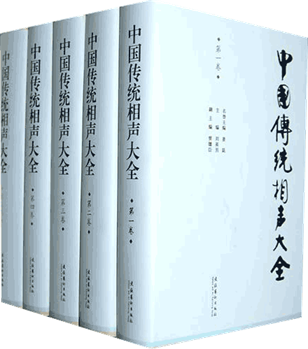

当前位置：首页>>相声理论>>“沈阳为相声做件大好事”——关于传统相声的搜集与出版
“沈阳为相声做件大好事”——关于传统相声的搜集与出版
发布时间：2012-1-14 00:26| 发布者: 海客| 查看: 19841| 评论: 4
这篇文章是刘英男老先生2010年应沈阳市文联成立60周年相关活动所写的回忆性文章。当时老先生身体欠佳，年近八十二岁高龄，因为我与老先生相识，才要我打字编辑、保存。这也算是一篇珍贵的相声资料，现在公布出来与大家共同分享。文章所记所载均为老先生所写，我只做了一些文字、段落的编辑。
所谓“传统相声”，其实应该是传承了百余年的近代相声。这是一笔弥足珍贵的世界级的非物质文化遗产。 近代相声起源于清末民初的北京天桥。在列强入侵、军阀混战的水深火热、民不聊生的岁月里，相声艺术为灾难深重的人民大众送来了辛酸的欢乐。从1931年起至中华人民共和国建国前夕，这一段为传统相声的成长期。主要表现在：相声由北京伸延到全国各大城市，队伍空前壮大，有的城市还建立了固定的演出场所。节目到1939年已发展到270段，有的还被电台选播，扩大了声势，演员的思想觉悟与文化素质也具有一定的提高。更有文人的介入，被称作“清门”的相声爱好者，也热情的动笔写作。据老艺人的回忆，《五红图》、《八猫图》、《红事会》、《三节会》、《洪羊洞》、《窦公训子》几段就出自“清门”写作的。因而相声节目从数量到质量都有一个可喜的飞跃。
处在萌芽期的相声，首先是以娱乐功能博得劳苦大众欢迎的、当初在天桥在空地上出现几处撂地“画锅”的演出形式：演员用白沙子撒成一个圈，然后在圈内使口技学飞禽的啼声，走兽的叫声；或藏在黑纱围成的幕内学各省人、老太太和大姑娘的说话声招徕观众。那时一些观众并不知道这种演出形式的名称，只觉得可乐爱看，所以就有人叫它“人人乐”。这种演出形式一般只有一、两个人。据老艺人记忆说：“一人单，二人联，三人起讧，四个人不挣钱。”当初演出的人员有姓有名的较少，例如：焦德海、刘德智等；有姓无名的较多，例如：韩麻子、周蛤蟆、陈大脑袋等；也有无名无姓的，例如：“穷不怕”、“人人乐”。1914年官方将天桥一带命名为“天桥市场”，参加相声演出的人员也逐渐增多，场地也由天桥扩展到东安市场、西单市场及白塔寺、护国寺、隆福寺等地庙会。随着场地增多，队伍扩大，演出质量提高，艺术上简单地形成了说、学、逗、唱四门基本功。1931年原“北平笑社”成员张笑侠先后到各场地对相声演出情况做了详细的调查，并于1932年写出《相声总论》的报告，记录了四十个相声段子，计划分上、中、下三集编印，然而我们只见到我国相声史上的第一本《相声集》（上篇），之后的中篇与下篇并未问世。同时笑社的另一位成员张次溪系辅仁大学教授，他在《天桥一览》一书中也详细介绍了“人人乐”的演出情况。这说明相声这一曲艺形式在群众中已奠定了牢固的基础，并将稳步跨入它的成长期。
上一篇：记张寿臣老师二三事下一篇：爱好和理想（王长友口述，禾波整理)
相声理论
- “沈阳为相声做件大好事”2017-04-11
- 记张寿臣老师二三事2017-04-11
- 爱好和理想（王长友口述)2017-01-11
- 相声名家赵佩如被绑架之谜2016-07-17
- 相声认知：0145《看球赛》2016-03-17
- 郭荣起：《绕口令》的整理和演出2015-04-21
- 相声认知：0127《洋奴才》《尊严》2014-05-21
- 相声认知：0126《买猴儿》2005-07-17
- 相声认知：0125《妈妈的歌》2004-07-17
- 相声认知：0124《戒烟》2002-07-17